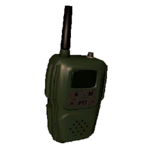
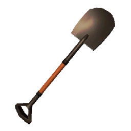

Walkie-talkie
 The walkie-talkie is used to communicate between players over long distances. It can be very useful for information gathering and cross-map communication. It requires power and needs to be switched on to both transmit voice to other players, and receive voice The battery can be used as a clock. A full workday lasts 11.3 hours before you're forced to leave the premises, almost matching the walkie-talkie's total battery life of 13.7 hours
Stun Grenade

A non-lethal explosive that will stun most entities for a short while. Once the striker lever is removed, the grenade will detonate after 3 seconds. If not thrown, it will deal 20 damage to the employee holding it at the point of detonation.
Its primitive, scrap counterpart is the DIY-Flashbang, having the same effect but immediately detonates upon use and cannot be thrown, also dealing 20 damage.
Shovel
 It is used to attack most entities and is capable of harming fellow employees. It has the lowest weight out of all the offensive melee weapons, making it a very useful option for self-defense.
The shovel deals 10 damage to employees, but registers the hit multiple times per swing causing a varying amount of damage. Entities have their own variable "Shovel HP".
 -->
-->